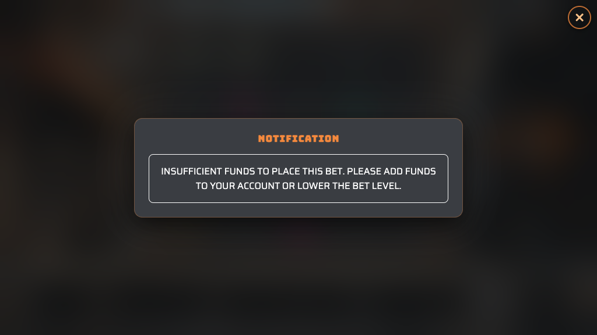
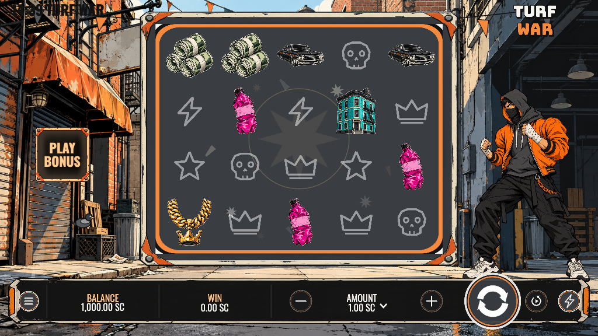
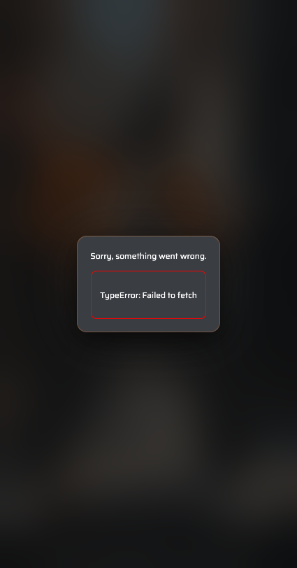
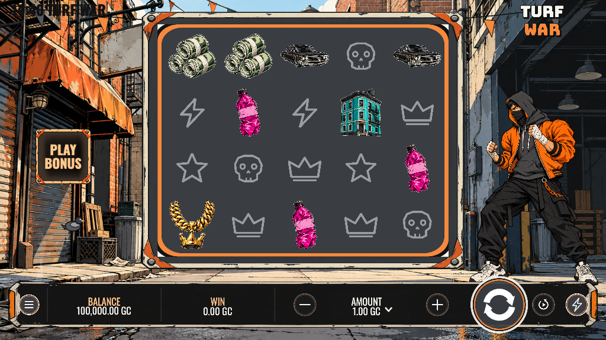
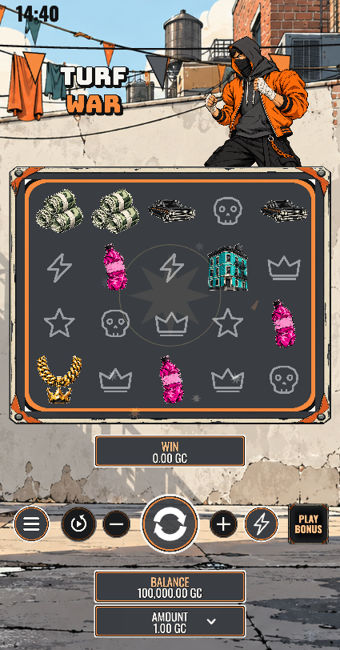
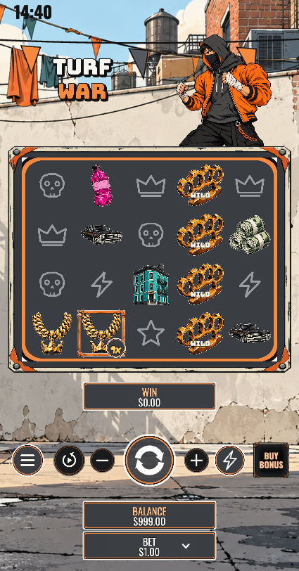
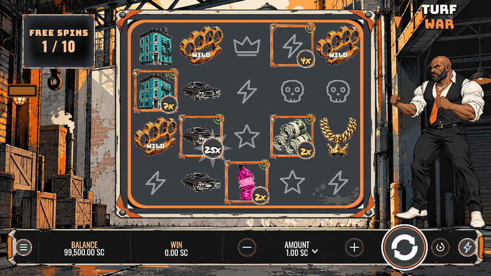
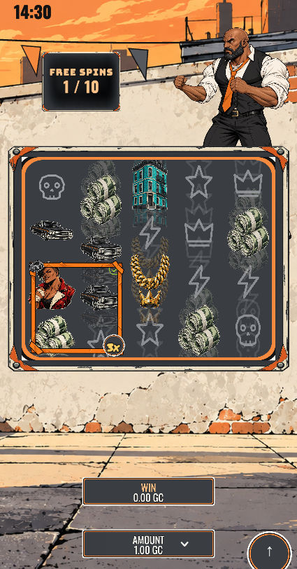
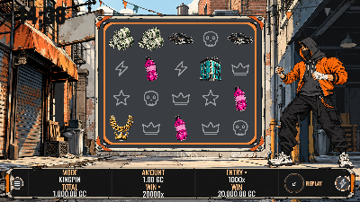
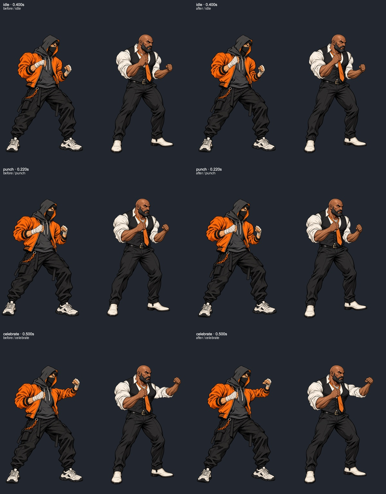

本機已修正三項原始 FAIL，以及角色 v5 權重／錯驗 guard、型別錯誤、錯誤提示遮擋與小視窗排版。
Turf 完整 guard 與建置通過。14 個遊戲最終 Vite 編譯成功；完整 app guard 有13個通過。HotMiami 的既有 H2 重複頭髮／full 合成來源美術閘門失敗，Vite 編譯仍成功；本輪未修改該美術。GoBananas100／SoulSeal 的型別基線路徑改為跨平台解析，未放寬 baseline。
Lookout、Muscle、Kingpin 均完整進出，Kingpin 達20,000×封頂。四模式重播完整結束，沒有 wallet 請求。425×812 hasTouch context 實際 tap 送出1局，0 page errors。桌機與直式 GC 金額字形補償後殘差0；通用 glyph 掃描器只量原字形，仍列6.2%差異，需結合 appliedY 補償結果解讀。
數學檔未變：保留前一階段100,000 books／LUT核對、3,069 fixtures一致與12,501條賠付重算證據。RTP 96.01／96.02／96.03／96.05%，最高20,000×。JPY保留較新10/14明確審查要求的兩位小數。
兩角色各3,431姿勢、共6,862，包括7個clip、兩種runtime速度、不同idle相位與反覆中斷混合。來源層與實際runtime裁圖合成RGBA誤差0。保留321張實際SpineCastFigure渲染畫面製成GIF；逐動作極值／中間格、混合、桌機與直式整合畫面未見分離、碎片、毛邊或接縫破口。
spine-motion-kit檢查無error；保留原曲線造成的idle／idle_weave IK加速度warnings（base最低85、fg最低90），未以降低動作掩蓋。數字檢查與評分不替代目視驗收。










Studio商店縮圖／cover需核對與同步；真實RGS玩家session、實體舊iOS／Android未測。全平台重名／商標、題材、角色年齡與最終原創／美術評分需製作人／平台確認。400×225已完整可操作且保留資料，最小視窗字仍小，附1:1截圖供判斷。
本輪僅更新本機包，math與thumbnail／cover檔案保持原雜湊。平台未上傳、未publish、未重送審；沒有產生ZIP。舊收據／舊動作預覽只屬歷史紀錄，不是新版驗證。
| ID | 項目 | 結果 | 證據／界線 |
|---|---|---|---|
| 181 | 啟動認證 | PASS | 本機真實 books 測試：POST /wallet/authenticate 成功；Authenticate.svelte:16、rgsFetcher.ts:37 取網址指定主機。未使用真實平台玩家 session。 |
| 274 | 無效 RGS | PASS | 已把開場卡移到認證與語系之後，error modal 優先。425×812 攔截無效 RGS，錯誤直接顯示、introCount=0，未使用備援主機。 |
| 183 | Spin 請求 | PASS | 桌機空白鍵、手機實際 touch 均成功送出本機 /wallet/play；amount=1000000，mode=BASE。 |
| 275 | 無 Engine loader | PASS | 實際開場為 Turf War / Silverstars；出貨包搜尋未發現禁用品牌 loader，無 loader.gif。 |
| 213 | 標題限制與唯一性 | AT RISK | app.html:5 為 Turf War，無列出的禁用名稱；全平台重名與商標唯一性未作完整搜尋。 |
| 217 | 內容適宜性 | NEEDS A HUMAN | 已看符號、兩名角色、縮圖、封面；未看到色情、血腥或仇恨圖像。需製作人最後確認角色年齡與題材接受度。 |
| 253 | 原創性／評分 | NEEDS A HUMAN | 需人工對照平台目錄與 Rating 標準；程式與資料正確不能保證美術／動作評分。 |
| 242 | RGS 下注設定 | PASS | 改 authenticate 為 [1,1.5,2]、預設1.5：畫面預設1.50，上下鍵停於1與2，選單1.00/1.50/MAX；Authenticate.svelte:67、stateBet.svelte.ts:31。 |
| 187 | 恢復未完局金額 | PASS | 本機 authenticate 回傳 active book64、amount=2000000；恢復後 BET=$2.00，WIN=$1.40，未回到預設1。createPrimaryMachines.ts:171。 |
| 219 | 幣別 | PASS | 保留10/14較新的明確審查要求：所有餘額與下注2位小數；小於一分的實際贏分保留精度。舊自檢JPY零位示例未覆寫較新的專案要求。 |
| 273 | 小於一分的贏分 | PASS | 直接執行現有 amount.ts 函式：0.005→$0.005，0.001→$0.001，0.05下注×0.1→$0.005（subcent.json）。未以新增合成 book 冒充真實贏局。 |
| 221 | 零贏分不關局 | PASS | 強制真實 BASE book1=0×：有 play、沒有 end-round。獲勝與三種feature正常關局。createPrimaryMachines.ts:92。 |
| 222 | 不足餘額提示與阻擋 | PASS | 已接入 ModalMessage。餘額0由空白鍵、Spin、自動旋轉三種路徑均顯示提示，play 請求0；社交提示使用 AMOUNT／BALANCE。 |
| 228 | 空白鍵 | PASS | 真實鍵盤事件使五輪開始並完成；EnableHotkey.svelte:26 全域綁定且 preventDefault。開啟選單時有 modal guard。 |
| 227 | 主畫面不捲動 | PASS | 1024×576、800×450、400×225、425×812 的 scrollWidth/Height 均等於視窗；可捲動的是選單內文。 |
| 104 | 自動旋轉確認 | PASS | 開啟 Auto Spins 與 ADVANCED 均未啟動下注；最終正確定位的社交選單掃描 stats.rounds=0。ModalAutoSpin.svelte:21 / AutoSpinsStartButton.svelte:22。 |
| 31 | 高成本模式確認 | PASS | 100×/500×/1000×三個入口都有獨立確認卡；Lookout 確認前 rounds=0，確認後1局。前一步卡片列出總費用。 |
| 107 | 關閉全部聲音 | PASS | 追蹤仍播放中的 WebAudio GainNode 與 HTMLAudio voice；靜音即時更新。WebAudio gain 0.5625→0，HTMLAudio volume 0.5625→0；無 AudioContext 啟動也無例外。 |
| 25 | RTP／最高獎 | PASS | 四模式實算96.01/96.02/96.03/96.05%，最高20,000×，與 config / Rules 各模式表一致。 |
| 24 | 符號賠付 | PASS | 實際 Win Table 12種符號均列出正確圖片名稱；由同一 config paytable 重新計算每模式200個贏局，共12,501條賠付，零不一致。 |
| 26 | 贏分組合／倍率 | PASS | 規則說明5×4、14線、左至右、最高組合、Loot Bag相加及按位置計算；重算書本賠付符合。 |
| 27 | 模式與費用 | PASS | 四模式與 index.json 相符：base1×、Lookout100×、Muscle500×、Kingpin1000×；betModeMeta.ts:50。 |
| 29 | 免費局／再觸發 | PASS | 規則列3/4/5 Scatter對應三檔10次、2/3/4/5 Scatter再觸發+2/+4/+6/+8及次數無上限；三檔均實播結束，Kingpin測到封頂提前結束。 |
| 235 | 操作說明 | PASS | Rules 控制表列Spin/Space/Stop、±、金額、買feature、自動、Turbo、Menu、Info、Settings、Win Table、Sound；ModalGameRules.svelte:66。 |
| 185 | 一般聲明 | PASS | 實際Rules完整列出故障、網路、斷線續局、長期回報、顯示示意、RGS結算與TM/©2026 Engine；社交版為「Malfunction voids all wins and plays.」。 |
| 266 | Mystery 機率 | N/A | math/index.json 僅base與三個直接feature，無Mystery或宣稱機率的入口。 |
| 193 | 1024×576 | PASS | 主畫面、規則、賠付表、自動、feature、確認、設定與遊玩均有截圖；無資源失敗或程式例外。 |
| 195 | 400×225／800×450 | PASS | 400×225／800×450可操作；Turf opt-in 放大小視窗readout；400×225重播改3欄2列，六項資訊完整保留且位於frame內。最小視窗實體字仍小，附1:1截圖供製作人確認可讀性。 |
| 194 | 425×812手機 | PASS | hasTouch=true、maxTouchPoints=1 的獨立Chrome context實際tap開始1局；另完整Kingpin遊玩、封頂、角色與portrait畫面已檢視。真實iOS/舊Android未測。 |
| 223 | 防雙擊縮放 | PASS | app.html:73 maximum-scale=1,user-scalable=no；body touch-action:manipulation。真實iOS行為另需裝置確認。 |
| 239 | 英文 | PASS | 英文Intro、Rules、Win Table、設定、自動、買feature及重播皆可讀，未見未替換key；有Lingui未編譯catalog fallback警告，無本輪遊玩例外。 |
| 240 | 未知語言 | PASS | lang=zz在7種幣別均回落英文且正常載入；stateUrl.svelte.ts:29。 |
| 77 | 社交用語 | PASS | Turf opt-in 同時採用 URL 與 authenticate.jurisdiction.socialCasino。RGS-only＋social=false＋lang=ja 強制英文、AMOUNT／PLAY BONUS；SC／GC 三檔完整流程動態掃描0禁字。 |
| 78 | SC／GC | PASS | XSC/XGC正常啟動、feature及重播；顯示SC/GC後綴，未見$。 |
| 225 | 社交模式名稱 | PASS | LOOKOUT／MUSCLE／KINGPIN在遊戲、規則及重播一致，沒有受限字。 |
| social-en | 社交僅英文 | PASS | social=true&lang=ja的實際開場、選單、SC/GC feature仍為英文；RGS-only旗標漏洞已歸#77。 |
| 188 | 社交重播用語 | PASS | Muscle SC與Kingpin GC replay完整播完；Final/Feature Multiplier、Total Play Amount正確，動態文字掃描無禁字。 |
| 171 | 重播與隔離 | PASS | base loss、Lookout、Muscle、Kingpin cap皆完整重播；另base win64播放兩次。全部無wallet請求，僅GET /bet/replay/...。資料均來自當前publish books。 |
| 172 | 重播選用參數 | PASS | 400×225、amount=5000000/currency=EUR/lang=fr：€5.00下注、€3.50贏分，UI重播鍵為REJOUER；未測盡所有無效數值組合。 |
| 173 | 再次重播 | PASS | BASE book64第二次按↺後五輪均motion=spinning，完成後同樣0.7×／€3.50。 |
| 174 | 重播費用／倍率 | PASS | Lookout $1→100×→$100；Muscle 1 SC→500×→500 SC；Kingpin 1 GC→1000×→1000 GC，結束後六欄資訊保留。 |
| 243 | 小視窗重播 | PASS | 400×225完成BASE零獎、BASE贏局重播兩次、Kingpin 20,000×重播；開始按鈕與↺可操作。字小風險歸#195。 |
| tile | 縮圖／封面檔案 | PASS | BG/FG各1024²，不透明BG與透明FG，合計2,260,866 bytes <3MB；provider logo存在透明通道。Cover 1920×1080兩層，已檢視合成。Studio店圖未以網頁核對。 |
| math | 數學完整性 | PASS | 100,000 books逐本對LUT，零payout mismatch、零缺ID；全事件均有handler。3,069本測試fixture與當前publish資料完全相符；stakecli compliance 0 failures/0 warnings。 |
| static | 本機靜態依賴 | PASS | 本輪執行資源無404、無外部字型/CDN依賴；正式包無stub／舊遊戲展示名稱／禁用loader。內部API/套件字串不視為外部載入。 |
| console | 執行例外 | PASS | 正常開局、三種feature、所有重播、手機touch均無pageerror；無效主機測試的fetch錯誤是預期情境。 |
| center | 文字置中 | PASS | Turf opt-in 以實際字型ink metrics補償金額與GC字形基線，其他遊戲保持原設定；桌機、portrait及選單重測詳見social-sweep與centering-final。 |
| cast | 角色驗收與guard | PASS | 修v5肩部、胸／拳綁定、腿部權重與低alpha裁圖；骨架、動畫曲線、角色尺寸與速度未縮減。guard直接讀runtime v5，兩角色共6862姿勢含反覆中斷混合無可見三角翻面；舊v5反例會失敗。來源與runtime裁圖合成RGBA誤差0。321張實際renderer畫面、兩角色全部7clip與混合、桌機及portrait目視未見殘影／破口／分離。 |
| beats | Feature角色表演 | PASS | 實播intro、win與大獎反應會動，三檔feature結束可回主遊戲；轉場中有截圖，非以舊preview替代現版。角色畫質驗收保留於cast風險。 |
| types | 型別檢查 | PASS | 型別檢查限src而非design歷史檔；修45個app與7個shared錯誤、typed stories／symbol／event／語系。最終svelte-check：0 errors、0 warnings。 |
| package | 出貨版本一致 | PASS | 本機upload/TurfWar重新暫存：frontend152＋math9＋thumbnail3＋cover2，166檔SHA256全吻合；source／build／stage的v5 rig與texture相同。math、商店圖沿用且hash不變。平台尚未更新，新包不再與遠端v27相同。 |
| platform | 平台與送審程序 | AT RISK | 本輪未上傳、publish或重送審。開始前唯讀get_game為front27／math7、approval closed／locked；新本機包需之後同步。Studio商店圖、真實RGS session與舊手機仍待平台／實機驗證。 |